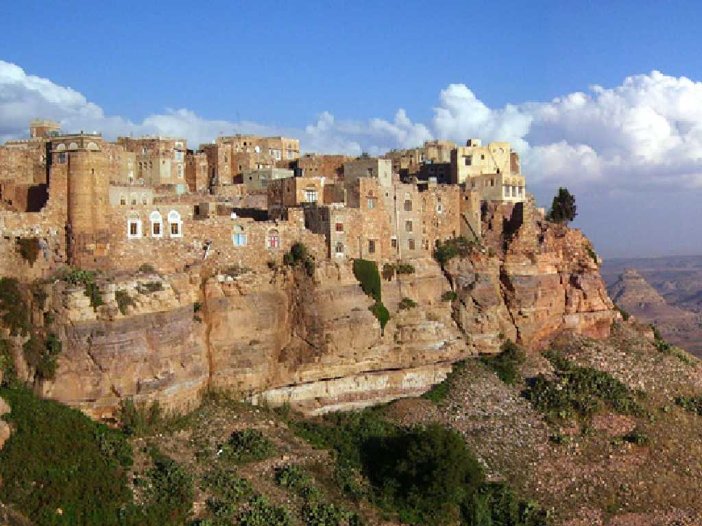
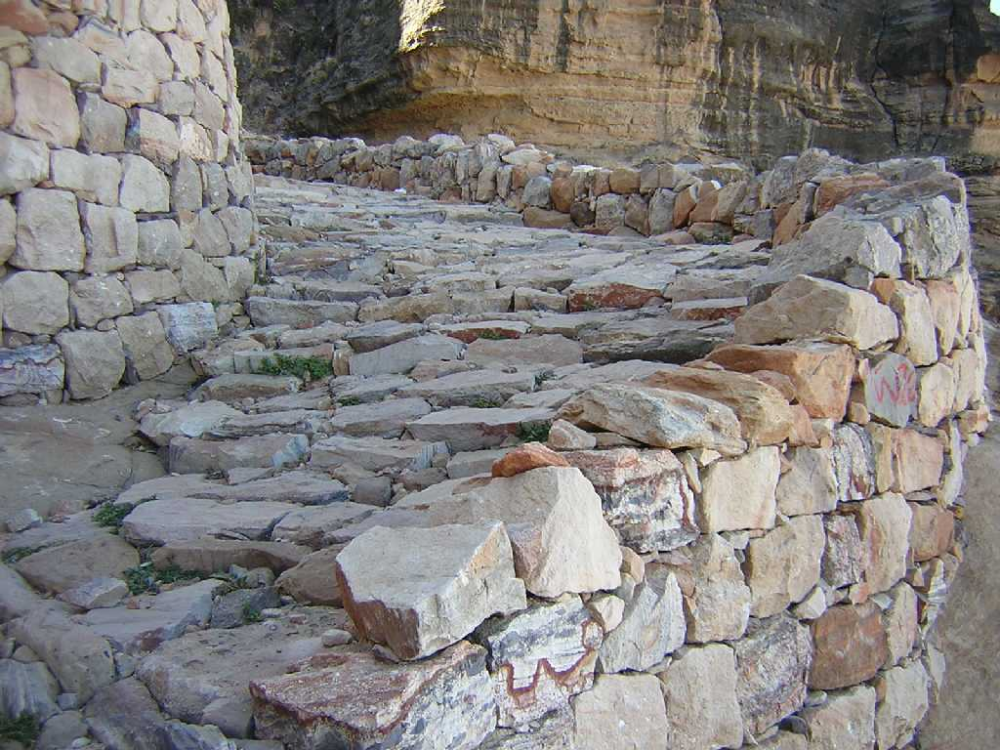
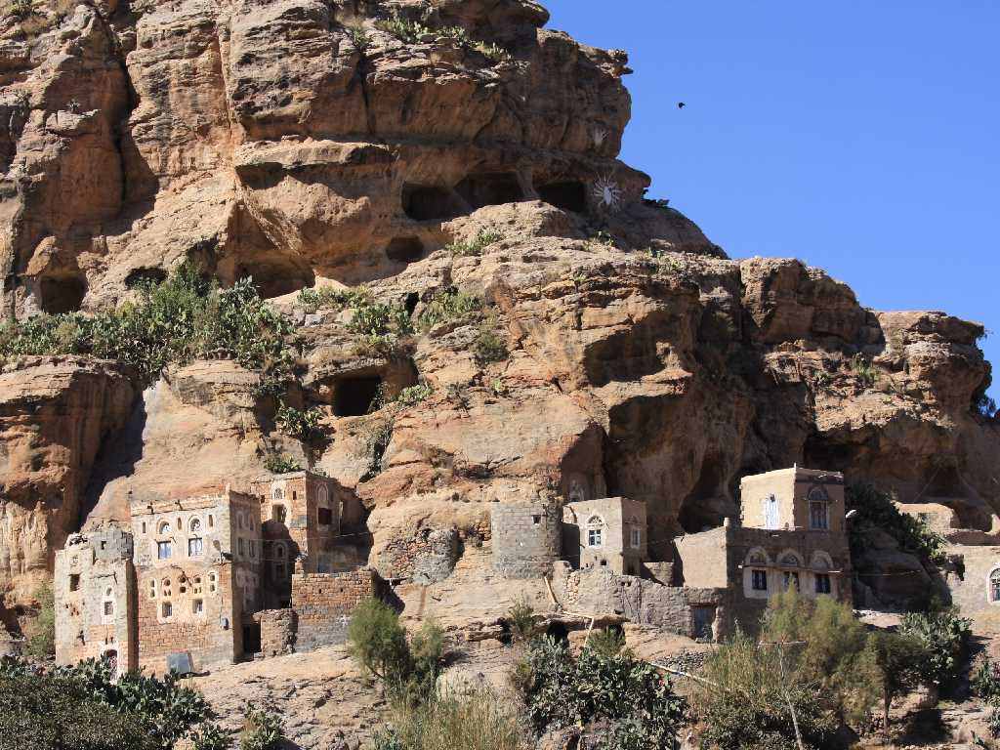

Kawkaban
アラビア語で二つの星を意味し鷲の巣とも称される三方が岸壁の上に建つ標高２,９３１mの要塞都市コーカバンで岸壁下の広大な農地の端にあるシバームから水や食料等を運び上げて生活をしていた

La scalinata
戦争や略奪などの非常時にはシバムの住民は要塞都市コーカバンに避難して敵から身を守った姉妹都市で標高差３００ｍ余りの町を結ぶ道

Shibam
背後が岸壁の下に建つかつて小さなユーフィリド朝（８４７～９９７年）王国の首都でもあったシバーム